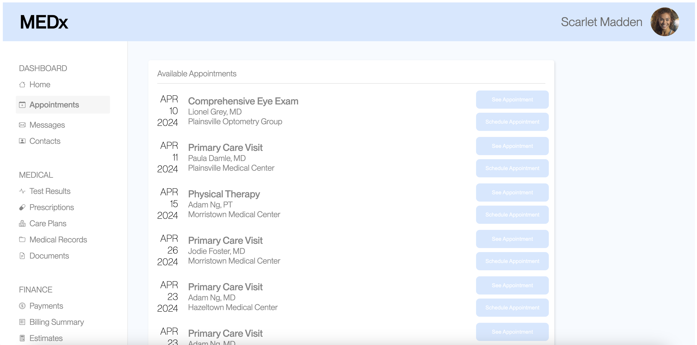

In this scenario, I was designing for a website (MedX) that allows users to schedule doctor's appointments. I wanted to see if making a small change to the UI of the website--primarily with spacing and color choices--would make it more convenient and intuitive for users to navigate the page and book the appointment they wanted.
In other words: will changing the UI of MedX help users find and book an appointment faster?
I used an A/B test to help answer this question. By changing the website slightly and tracking how quickly and easily users were able to navigate to the correct appointment and click the "schedule appointment" button on both old and new versions of the website, I could analyze how a small change in the UI affected the user's experience.


Once I identified the key problems with the original website, I made a series of speed sketches culminating in a final sketch. My goal was to simplify the structure of the menu, so I ditched the slideshow on the original website and used a simple grid for the menu.
I then created and annotated a lo-fi mockup of the revised website with Figma!


In the hi-fi stage, I ended up changing a couple of things! Firstly, I decided that having an image as the background of the header was too cluttered since I wanted the focus to be on the menu items, so I removed it. I additionally made the reserve button more prominent.
For the overall style guide, I used the logo of the restaurant as a reference and matched the style with modern, sleek-looking fonts and colors.


Nice! The website is looking much cleaner! :)
Looking back, if I had more time, these are some things I would extend and improve upon:
My redesign can be found at this link!